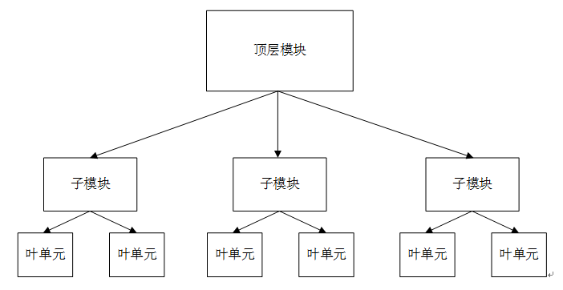

Método de diseño
El diseño de Verilog utiliza principalmente el método de diseño de arriba hacia abajo (top-down). Es decir, primero se define la funcionalidad del módulo de nivel superior, y luego se analizan los submódulos necesarios para constituir el módulo de nivel superior; después se descomponen y diseñan aún más cada uno de los módulos hasta llegar a los bloques funcionales de nivel inferior que no se pueden descomponer más. De esta manera, un sistema grande puede dividirse en múltiples subsistemas, asignando el diseño a más personal en términos de tiempo y carga de trabajo, lo que aumenta la velocidad de diseño y acorta el ciclo de desarrollo.

Flujo de diseño

El flujo de diseño de Verilog generalmente incluye los siguientes pasos:
Análisis de requisitos
El personal debe analizar y comprender los requisitos funcionales planteados por el usuario, realizar la planificación general del sistema de circuitos, formar especificaciones técnicas detalladas y determinar el plan preliminar. Por ejemplo, para diseñar una pantalla electrónica, se deben considerar el método de suministro de energía, la frecuencia de trabajo, el volumen del producto, el costo, el consumo de energía, etc., así como si la implementación del circuito utiliza ASIC o dispositivos FPGA/CPLD.
División de funciones
Después de analizar correctamente los requisitos de circuito del usuario, se puede realizar el diseño general de la función lógica, diseñar la funcionalidad, la interfaz y la estructura general de todo el circuito, considerar la división de los módulos funcionales y el enfoque de diseño, las interfaces y la temporización (timing) de cada submódulo (incluida la temporización de interfaz y la temporización de señales internas), etc., y asignar razonablemente las tareas de diseño de submódulos a los miembros del proyecto.
Descripción textual
Se puede utilizar cualquier editor de texto, o también un entorno de edición HDL especializado, para modelar el diseño del circuito digital requerido y guardarlo como.varchivo.
Simulación funcional (simulación previa)
Compile el archivo de modelado, realice una simulación y verificación funcional del circuito modelo, busque errores de diseño y corríjalos.
La verificación por simulación en este momento no tiene en cuenta factores de timing como el retardo de la señal; solo verifica la corrección lógica.
Síntesis lógica
La síntesis (synthesize) es el proceso de convertir la descripción de alto nivel del diseño (modelado Verilog) en una netlist a nivel de compuertas, basándose en la biblioteca de celdas estándar y restricciones de diseño específicas. El propósito de la síntesis lógica es generar una estructura física a nivel de compuertas del circuito y realizar una cierta optimización en lógica y temporización (timing), buscando un equilibrio entre lógica, área y consumo de energía, y mejorando la capacidad de prueba del circuito.
Pero no todas las sentencias de Verilog se pueden sintetizar en unidades lógicas, por ejemplo, las sentencias de retardo (delay).
Colocación y enrutado
De acuerdo con la netlist sintetizada lógicamente y el archivo de restricciones, se realiza la colocación y enrutado del circuito a nivel de compuertas utilizando las diversas bibliotecas de celdas estándar básicas proporcionadas por el fabricante. En este punto, el circuito digital diseñado en Verilog ya se ha convertido en un circuito digital compuesto por bibliotecas de celdas estándar.
Simulación de temporización (post-simulación)
Después de la colocación y enrutado, el modelo del circuito ya contiene información de retardo. Utilizando los parámetros precisos obtenidos en la colocación y enrutado, se verifica la temporización (timing) del circuito con un software de simulación. Las diferencias en los dispositivos de celda y los esquemas de colocación y enrutado pueden afectar la temporización del circuito, y en casos graves pueden causar errores. Después de un error, puede ser necesario modificar nuevamente el RTL (descripción a nivel de transferencia de registros, es decir, la descripción inicial en Verilog) y repetir los pasos posteriores. Este proceso puede repetirse varias veces hasta que los errores se eliminen por completo.
Descarga en FPGA/CPLD o producción mediante proceso de fabricación ASIC
Una vez completados todos los pasos anteriores, se puede descargar el archivo de destino del circuito digital diseñado al chip FPGA/CPLD mediante herramientas de desarrollo, y luego depurar y verificar en la placa de circuito.
Si se desea implementar en un ASIC, es necesario fabricar el chip. Generalmente, durante la fabricación del chip, también se debe verificar primero la función lógica en una placa FPGA.
Haz clic para compartir notas
<p style="font-size:14px;">¡Las notas deben ser una extensión del contenido de este artículo!</p><br> <p style="font-size:12px;"><a href="../tougao.html" target="_blank">Para enviar artículos, haga clic aquí</a></p> <p style="font-size:14px;"><a href="./runoob-user-test-intro.html" target="_blank">Cómo obtener el código de invitación de registro</a></p> <h3 class="text-muted"><i class="fa fa-info-circle" aria-hidden="true"></i> ¡Antes de compartir notas, debe <a href=".." class="runoob-pop">iniciar sesión</a>!</h3> <p><a href="./runoob-user-test-intro.html" target="_blank">Cómo obtener el código de invitación de registro</a></p>